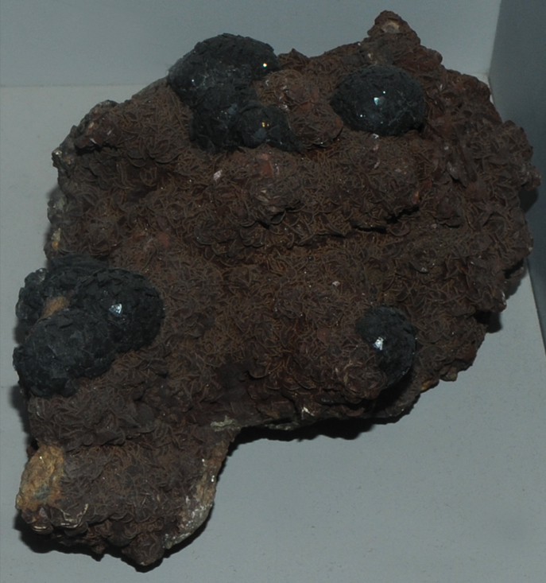

|

| Fe3(SiFe)O5(OH)4
This sample of cronstedtite is displayed in the Smithsonian Museum of Natural History. Cronstedtite is a silicate mineral with the composition Fe3(SiFe)O5(OH)4. The sample at left is about 12 cm across and is from Herja, Crisana-Maramures, Romania. This sample is described as cronstedtite with siderite.
|